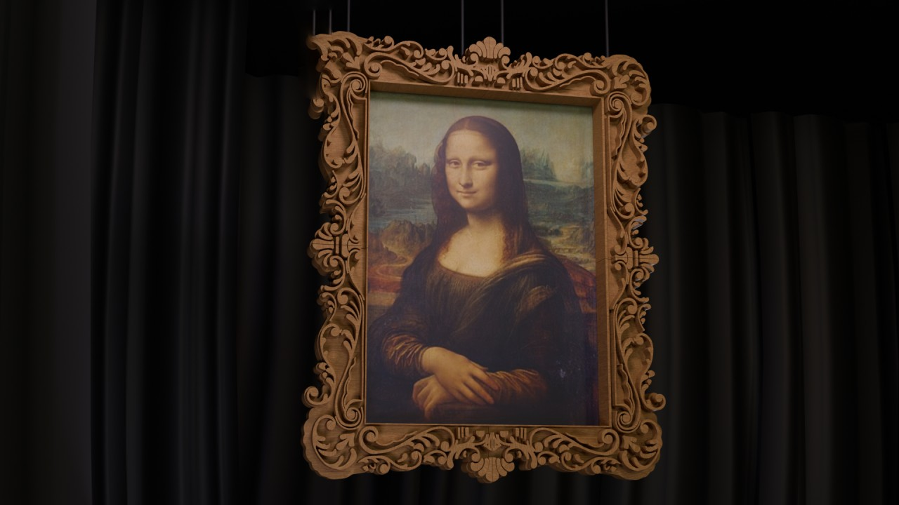
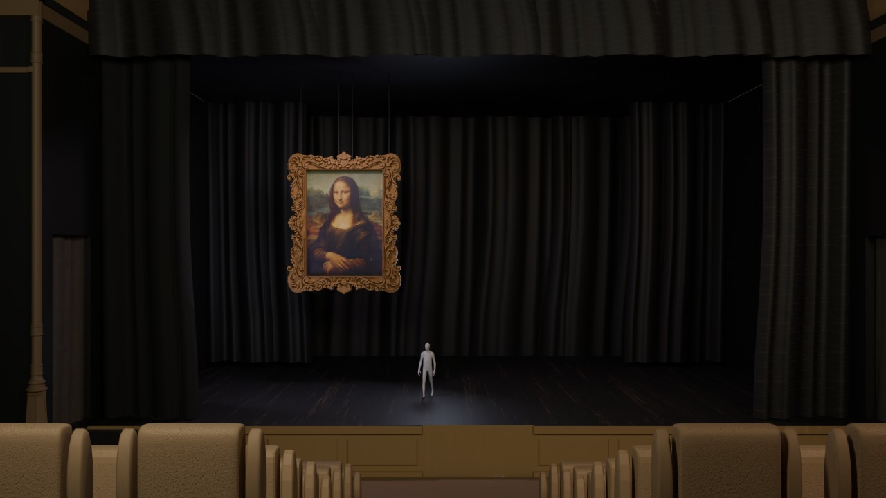
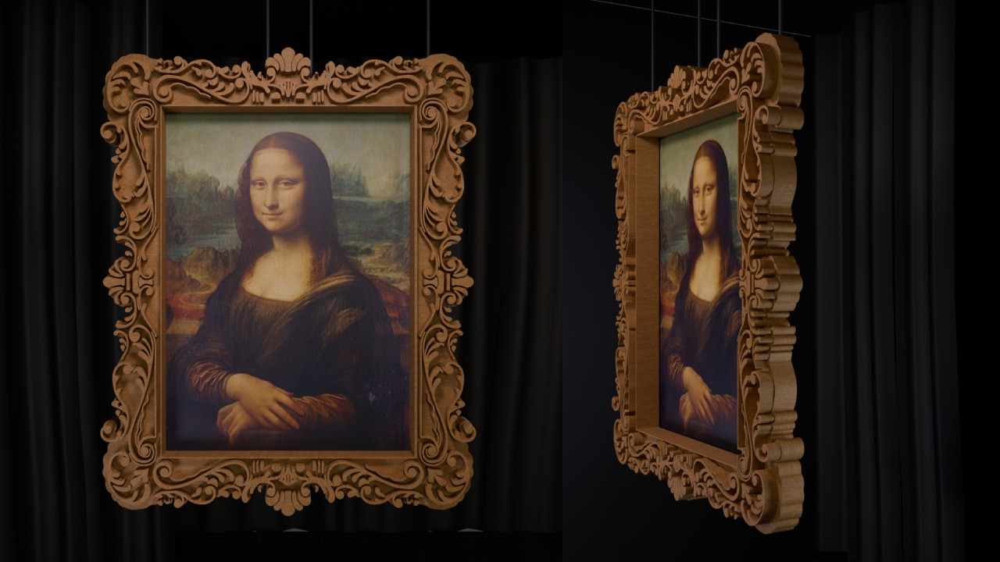
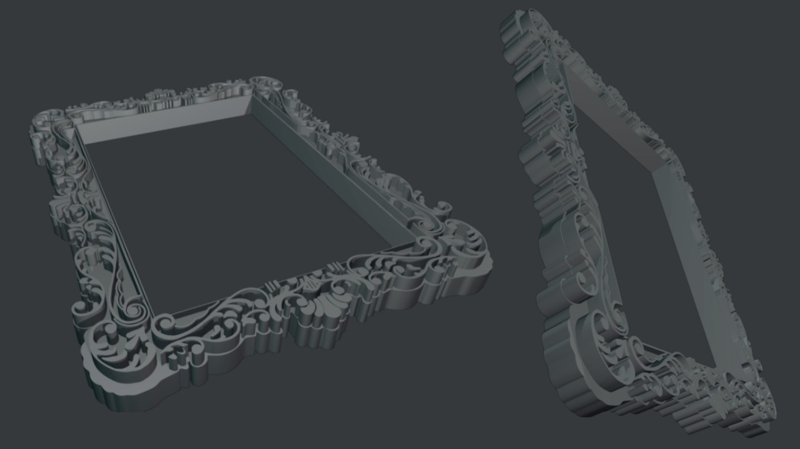
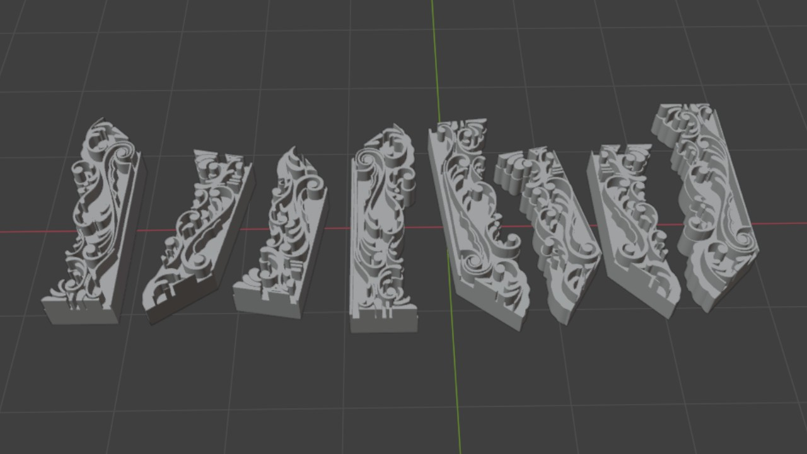

Multimedia Artist | 3D Modeling and Animation
The project 'PLÁGIO AO VIVO' was a live show by Mafalda Creative and Mariana Bossy. I designed a large Renaissance-style 3D frame inspired by the Mona Lisa's, which was printed at a size of 3m x 4m.
MAFALDA CREATIVE E MARIANA BOSSY - PLÁGIO AO VIVO - EVENT
During the process, I handled the STL file preparation to ensure the frame was ready for large-scale 3D printing.
Below is a gallery showcasing the final 3D model and the printing process:
Original Scale Print (4m x 5m)
3D Render
3D Render
3D Render
STL Model Preview
STL 8 Parts - Model Preview
Mona Lisa Frame Gallery
Software used: